HEJ MED DIG!
Mit navn er Linnea,
jeg er 23 år gammel og
jeg er frivillig Brandmand.
Følg min rejse her.
Fra HTX i Vejle til beredsskabsstyrelsen
Da jeg blev student, gjorde jeg ligesom mange andre og holdte sabbatår.
I mit andet sabbatår valgte jeg lidt spontant at
blive en del af beredskabsstyrelsen, hvor jeg fik en
brandmandsuddannelse og masser af kompetencer indenfor brand,
redning og beredskab, hvilket jeg syntes var rigtig fedt!
Da jeg var færdig med det sabbatår, valgte jeg at tage et mere
hvor jeg var skiinstruktør.
1/7
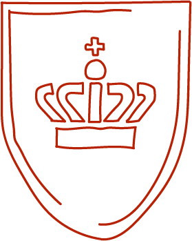 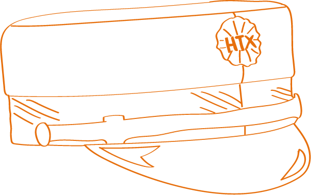 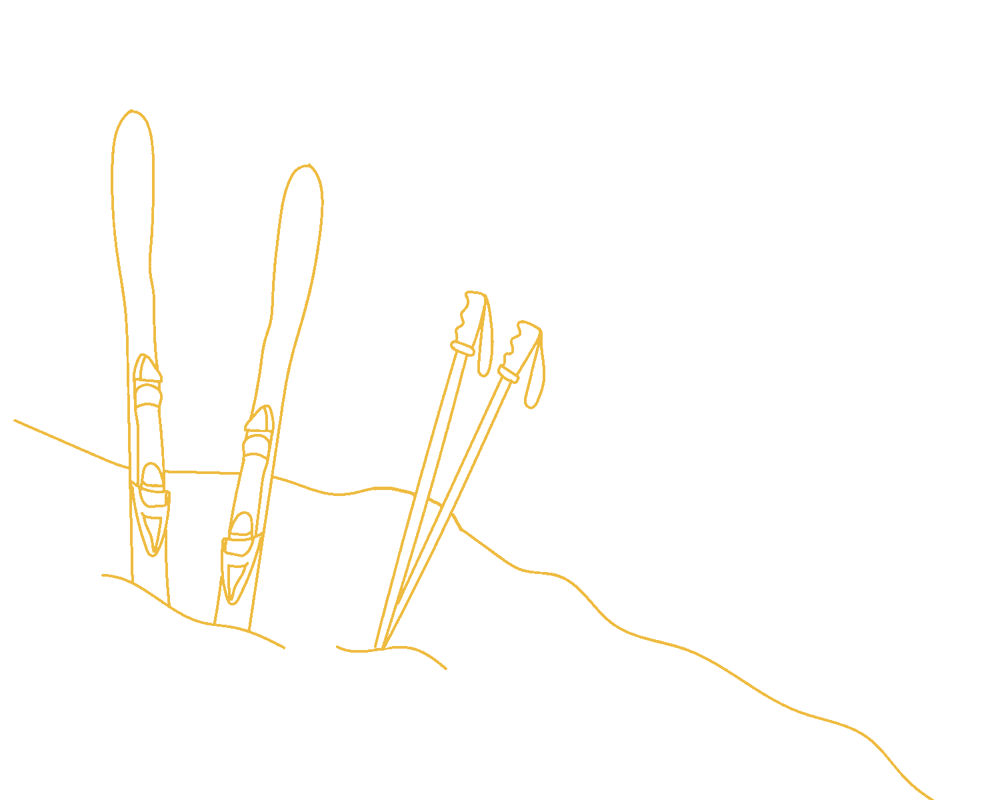Savn til beredskabsstyrrelsen efter flytning
Efter endnu et overstået sabbatår flyttede jeg til Århus, hvor jeg nu er tandlægestuderende. Jeg begyndte dog at savne at være i beredskabsstyrelsen, så jeg kiggede rundt omkring på at blive frivillig i Århus, og da jeg vidste, at der lå en brandstation tæt på, hvor jeg bor, skrev jeg en mail, for at høre om det var muligt at blive frivillig. De gav mig et nummer jeg kunne ringe på, og det endte så med, at jeg kom ud på brandstationen, fik en rundvisning, fik snakket med stationslederen og fik fortalt hvordan det hele foregår. Efterfølgende fik jeg en kontrakt at
skrive under på, som egentlig bare er for at være forsikret i forhold til øvelser og lignende.
2/7
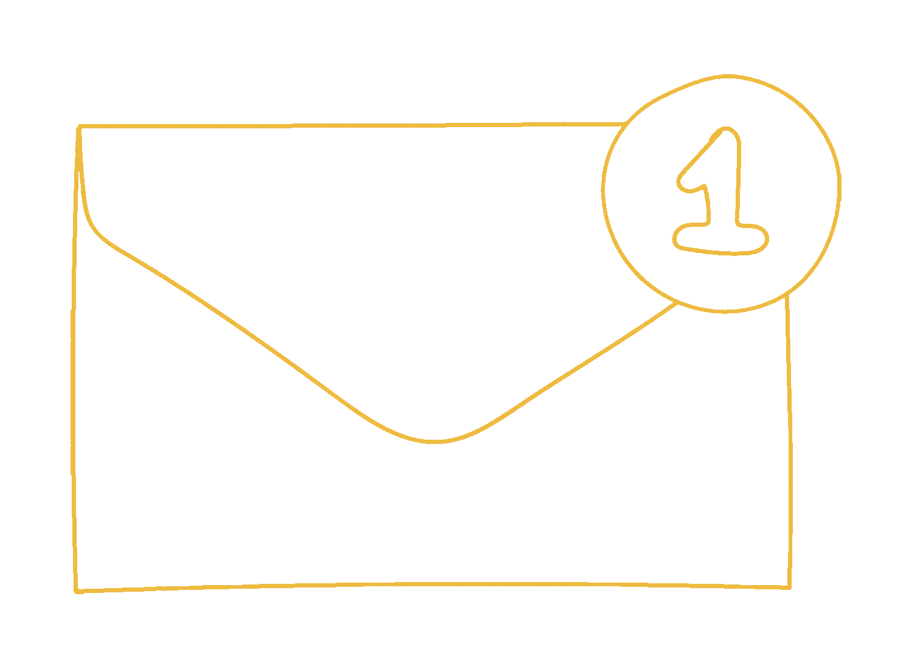 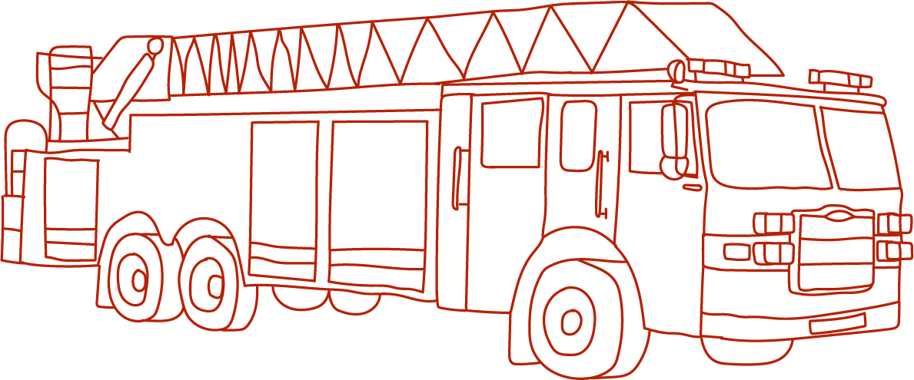
Samarit
Udover at være frivillig brandmand kan man også blive frivillig samarit. En samarit er en person som har modtaget uddannelse i at give førstehjælp. Deres arbejde består i at hjælpe til ved festivaler, sportsstævner og lignende. Jeg har været med et par gange som samarit, hvilket også har været spændende. Kravene er lidt anderledes, og kurserne er kortere, så det er lidt nemmere at blive samarit. Jeg har været ude som frivillig brandmand to gange, den ene af gangene var som frivillig samarit ved DHL. Jeg havde egentlig ikke været frivillig samarit før, men de manglede nogle, og som frivillig brandmand havde jeg kompetencerne til at hjælpe til.
3/7
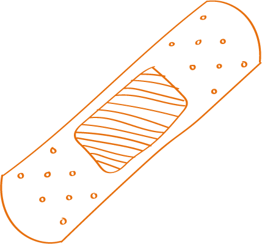 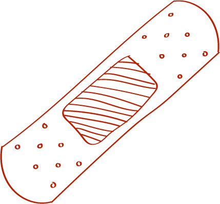 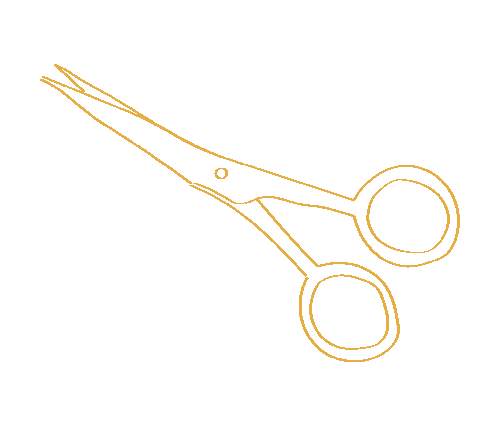 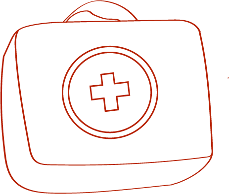 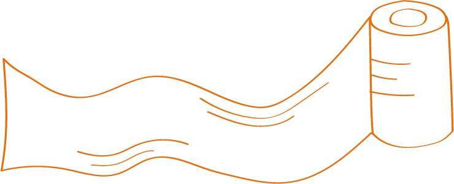En hverdag for mig
En hverdag for mig består typisk af at kunne sove længe,
få en kop kaffe og tage af sted til forelæsninger eller
holdundervisning. Når jeg får fri, tager jeg ofte ud og træner eller er sammen med nogle veninder. Nogle weekender arbejder jeg og nogle gør jeg ikke, så min hverdag er ikke den mest stressende. Hver 3. tirsdag aften kl. 19 skal jeg møde op på brandstationen, hvor vi gennemgår noget teori, laver nogle øvelser og kører en tur, og selvfølgelig drikker vi noget kaffe og får nogle gode samtaler indtil vi er færdige kl. 22.
4/7
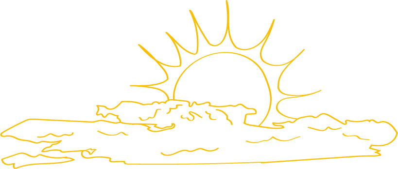 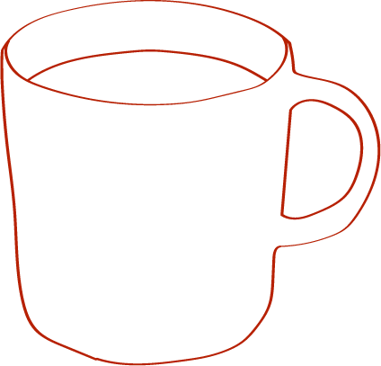 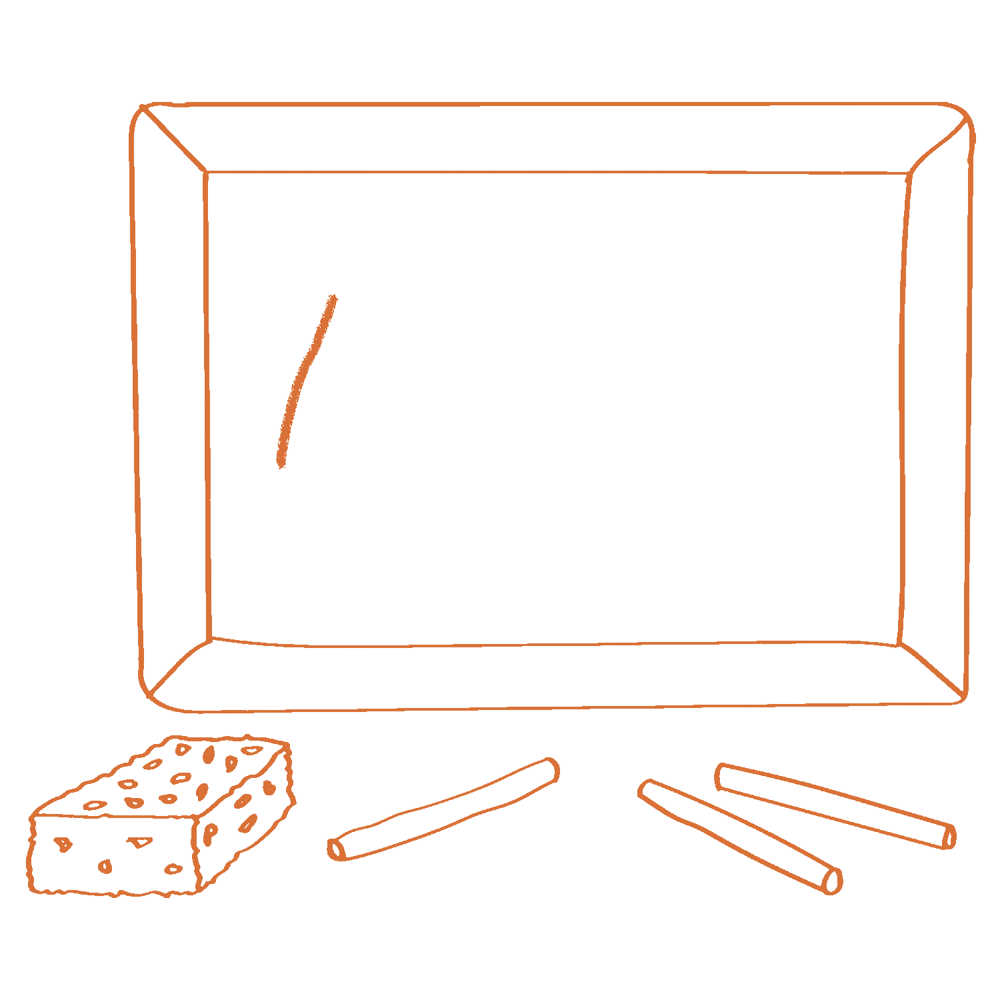Stationerne i Århus
Som frivillig brandmand i Århus er man altid på andet kald, hvilket vil sige at vi aldrig er de første der kommer ud. I mange kommuner er brandstationerne drevet af frivillige, så her er de ude som de første på et kald
I Århus er der tre fuldtids stationer, en
deltid og en frivillig. Det er altid først fuldtids
og deltids stationerne, som rykker ud først og
derefter ser du om de får brug for mere hjælp. Hvis de gør,
ringer de til alarmcentralen og rekvirere flere køretøjer.
Hvis der er brug for hjælp i Århus Nord, kan de sende folk
fra
Århus City, er dette så ikke tilstrækkeligt, er det her, frivillige kommer ind i billedet.
5/7
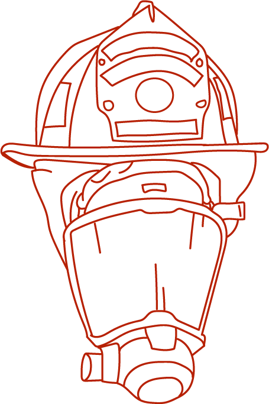 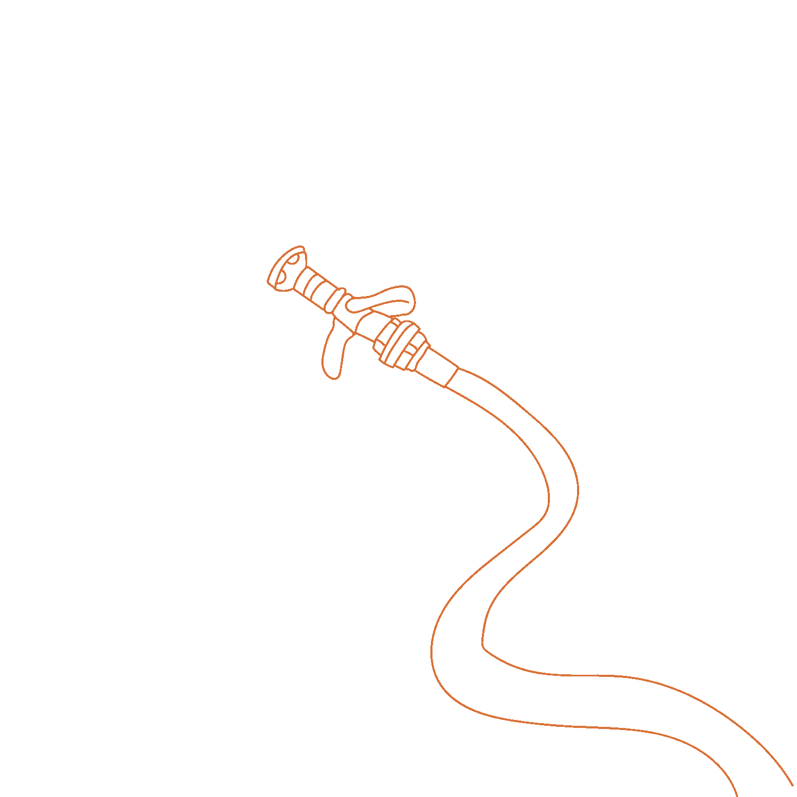Sådan fungerer det
Det fungerer sådan at man kan have en vagt i en uge, hvor man kan blive kaldt ud i tilfælde af at der er brug for frivillige brandmænd. Man kan også blive ringet op i de uger hvor man ikke har vagter, og her skal man tage stilling til om man kan møde op på brandstationen, helst indenfor 15 min, men ellers indenfor 30 min eller senere. Hvis man slet ikke kan møde
op, kan man også sagtens sige nej, da det jo er frivilligt arbejde, og det har folk generelt også respekt for.
6/7
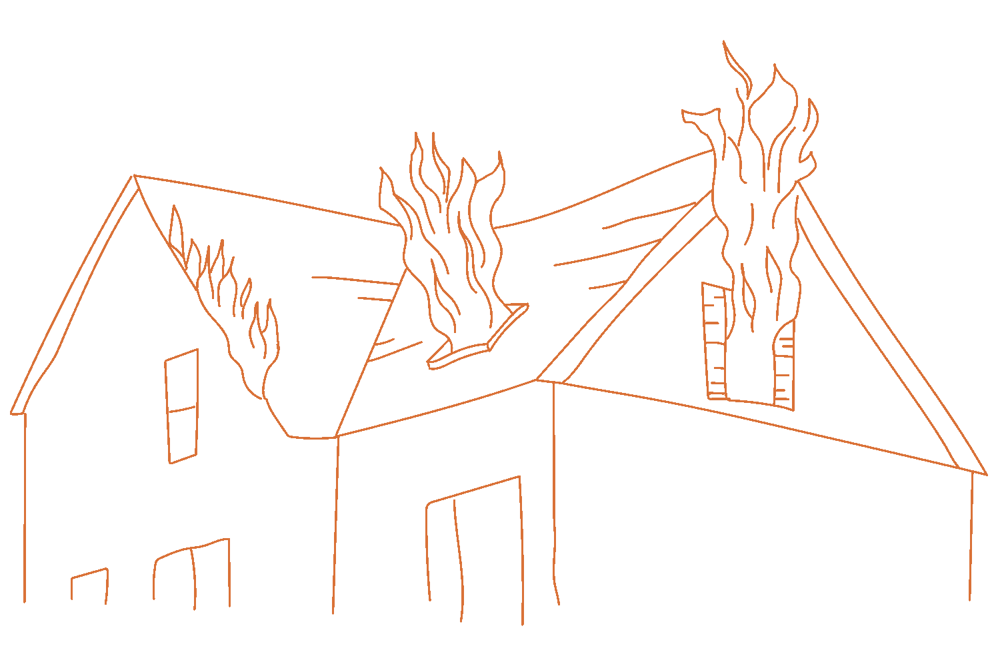 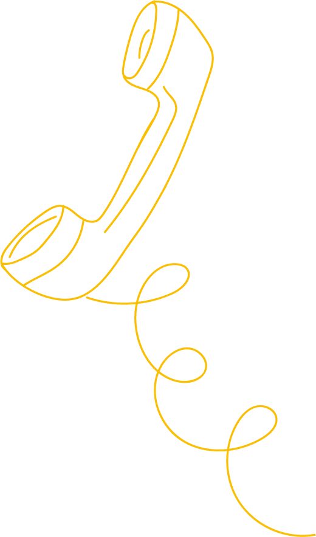Fordele som frivillig brandmand
Nogle af de vigtigste ting for mig som frivillig brandmand er at jeg laver noget som giver mening og at jeg har fået kompetencer til at redde en anden person og stoppe brand fra at sprede sig. derudover får man også en bredere forståelse af andre og danner et socialt bånd, uanset hvad man
kommer fra og hvilket sted man er i livet. Dét at man godt kan være 54 år, have et stort firma, og stadig hygge sig med sådan en som mig er super vigtigt.
Tilbage til Starten 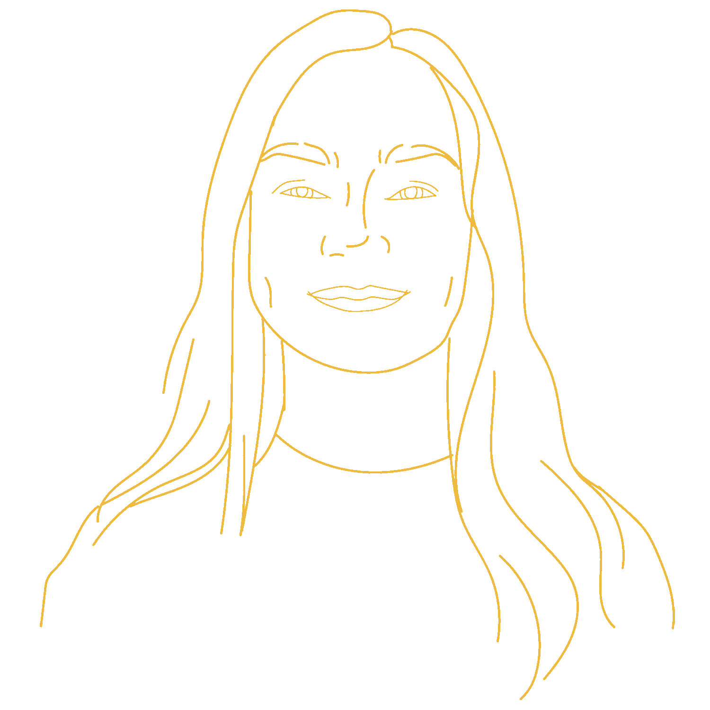 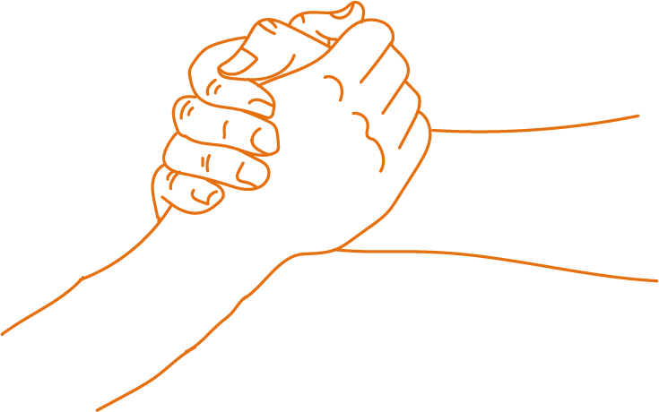